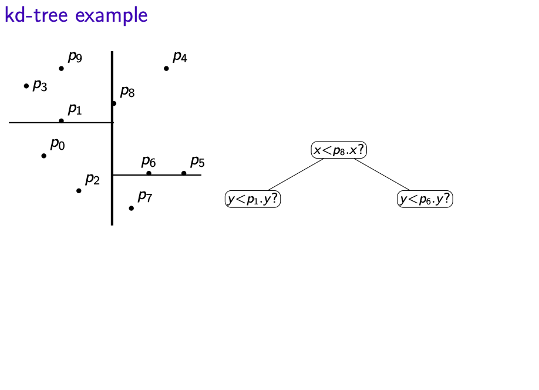

Algorithm I -- Range-Searchinging in Dictionary for Points
Table of contents:
Go back previous page
Quadtrees
Consider we have n points $S = \{(x_0,y_0), (x_1,y_1), \cdots , (x_{n-1}, y_{n-1}) \}$ in the plane.
Assume: All points are within a square R
- Can find R by computing minimum and maximum x and y values in S
- Ideally the width/height of R is a power of 2
How to build the quadtree on S:
- Root r of the quadtree corresponds to R
- If R contains 0 or 1 points, then root r is a leaf that stores point
- Else split: Partition R into four equal subsquares(quadrants) (i.e. $R_{NE}, R_{NW}, R_{SW}, R_{SE}$)
- Root r then has four subtrees, say $T_{NE}, T_{NW}, T_{SW}, T_{SE}$
- Recursively built the subtree and stop when there is only one point in the square
- Convention: In terms of the points that lie on the split line, we claim that those points belong to right/top side
......
Quadtree Dictionary Operations:
- Search: Similar to binary search trees and tries
- Insert:
- Search for that point
- Split the leaf when there are two points in one square.
- Delete:
- Search for the point
- Remove the point
- If its parents has only one point left, then delete the parents (recursively to all its ancestors
that have only one point left)
Quadtree Range Search
Alogrithm:
QTree-RangeSearch(T,A)
- T: The root of a quadtree, A: Query rectangle
- $\quad$ let R be the square associated with T
- $\quad$ if $R\subset A)$ then
- $\qquad$ report all points in T; return
- $\quad$ if $(R \cap A\,\,is\,\,empty)$ then
- $\qquad$ if p is in A return p
- $\qquad$ else return
- $\quad$ for each child vi of T do
- $\qquad$ QTree-RangeSearch(v,A)
Time analysis:
- Might have bad distribution of points
- spread factor of points $S: \beta(S) = \frac{sidelength\,\,of\,\,R} {d_{min}}$
- where $d_{min}$ is the minimum distance between two points in S
- height of the quadtree: $h\in \Theta (log \beta(S))$
- Complexity to build initial tree: $\Theta(nh)$ worst-case
- Complexity of range search: $\Theta(nh)$ worst-case even we found nothing
kd-trees
- Suppose we have n points $S = \{(x_0,y_0), (x_1, y_1), \cdots, (x_{n-1}, y_{n-1})\}$
- Split the region such that roughly half the point are in each subtree
- Each node of the kd-tree keeps track of a splitting line in one dimension (either vertical or horizontal)
- Convention: Points on split lines belong to right/top side
- Keep splitting, switching between vertical and horizontal lines, until every point is in a separate region
Constructing kd-trees
Build kd-tree with initial split by x on points S:
- If $|S| \le 1$ create a leaf and return
- Else X:= Quick-Search(S,$\lfloor\frac {n} {2} \rfloor$ (select by x-coordinate)
- Partition S by x-coordinate into $S_{x<X}$ and $S_{x\ge X}$
- Create left subtree recursively (splitting by y) for points $S_{x<X}$
- Create left subtree recursively (splitting by y) for points $S_{x\ge X}$
......
Analysis
- Find X and partition S in $\Theta(n)$ expected time
- $\Theta (n)$ expected time on each level in the tree
- Total is $\Theta(height \dot n)$ expected time
- Be able to reduced to $\Theta(nlogn + height \dot n)$ worst-case by pre-sorting (will be explain in the future)
kd-tree height
Assume first that the points are in general position(no two points have the same x/y-coordinate)
- $\lfloor \frac{n} {2} \rfloor$ points have been evenly puts into two sides
- height h(n) satisfies the recursion $h(n) \le h(\lceil \frac {n} {2} \rceil) + 1 $; this gives us $h(n) \le \lceil log(n) \rceil$
- thus we can build the kd-tree in $\Theta(nlogn)$ time and $O(n)$ space
kd-tree Dictionary Operations
- Search: similar to binary search tree by suing indicated cooridinate
- Insert: search, insert as new leaf
- Delete: search, remove leaf and unary parents
After insert or delete, the split might no longer be at exact median and the height is no longer guaranteed to be $O(logn)$ even
for points in general position.
kd-tree Range Search
- every node is associated with a region
kd-Tree RangeSearch(T,R,A)
T: The root of a kd-tree, R: region associated with T, A: query rectangle
- $\quad$ if ($R\subset A$) then report all points in T; return
- $\quad$ if ($R\cap A$ is empty) then return
- $\quad$ if (T sotres a single point p) then
- $\qquad$ if p is in A return p
- $\qquad$ else return
- $\quad$ if T stores split "is x < X"
- $\qquad R_{l} = R \cup \{(x,y) : x < X\}$
- $\qquad R_{r} = R \cup \{(x,y) : x \ge X\}$
- $\qquad$ kdTree-RangeSearch(T.left, $R_l$, A)
- $\qquad$ kdTree-RangeSearch(T.right, $R_r$, A)
- $\quad$ else
- $\qquad R_{l} = R \cup \{(x,y) : y < Y\}$
- $\qquad R_{r} = R \cup \{(x,y) : y \ge Y\}$
- $\qquad$ kdTree-RangeSearch(T.left, $R_l$, A)
- $\qquad$ kdTree-RangeSearch(T.right, $R_r$, A)
kd-Tree Range Search Complexity
- The complexity of range search in kd-trees is $O(s + \sqrt {n})$, where s is the number of reported points
- s can be anthing from 0 to n
- No range-search can work in o(s) time since it must report the points
- Q(n) is the number of "green" nodes:
- kdTree-RangeSearch was called
- Neither $R\in A$ nor $R\cap A = \emptyset$
- Q(n) satisfies the following recurrence relation:
$$Q(n) \le 2Q(n/4) + O(1)$$
- This solves to $Q(n) \in O (\sqrt{n})$
- For the higher dimensions:
- we have storage: $O(n)$
- Construction time is: $O(nlogn)$
- Range query time: $O(s+n^{1 - 1/d})$
Range Trees
-
Apply time-space trade off, might waste in space but faster in search.
- Have a binary search tree T (sorted by x-coordinate); --> primary structrue
- Each node v of T has an auxiliary structure T(v): a binary search tree (sorted by y-coordinate)
BST Range Search
BST-RangeSearch(T, $k_1$, $k_2$)
T: root of a binary search tree, $k_1$, $k_2$: search keys
Return keys in T that are in range[$k_1,k_2$]
- $\quad$ if T = null then return
- $\quad$ if $k_1 \le key(T) \le k_2$ then
- $\qquad$ L = BST-RangeSearch(T.left, $k_1,k_2$)
- $\qquad$ R = BST-RangeSearch(T.right, $k_1,k_2$)
- $\qquad$ return $L\cup \{key(T)\} \cup R$
- $\quad$ if key(T) < $k_1$ then
- $\qquad$ return BST-RangeSearch(T.right, $k_1,k_2$)
- $\quad$ if key(T) > $k_2$ then
- $\qquad$ return BST-RangeSearch(T.left, $k_1,k_2$)
Note: Keys are reported in in-order, i.e. in sorted order.
- Search for left boundary $k_1$ gives path ${\color{green} {P_1}}$
- Search for right boundary $k_2$ gives path ${\color{green} {P_2}}$
- Partition nodes of T into three groups:
- ${\color{green} {boundary\,\,nodes:}}$ nodes in $P_1$ or $P_2$
- ${\color{red} {inside\,\,nodes:}}$ nodes that are right of $P_1$ and left of $P_2$
- ${\color{blue} {outside\,\,nodes:}}$ nodes that are left of $P_1$ or right of $P_2$
- Report all inside nodes
- Test each boundary node and report if if it is in range
Range Search Analysis
Range Trees: Query Run-time
- O(logn) time to find boundary and allocation nodes in primary tree
- There are O(logn) allocation nodes
- O(logn + s) time for each allocation node v
- Two allocation nodes have no common point in their trees, so $\sum s_v \le s$
- Time for range-query in range tree: ${\color{red} {O(s+log^{2}n)}}$
Range Trees: Higher Dimensions
- Range trees can be generalized to d-dimensional space.
- Space: $O(n(logn)^{d-1})$
- Construction time: $O(n(logn)^{d-1})$
- Range query time: $O(s+(logn)^d)$
Back To Top